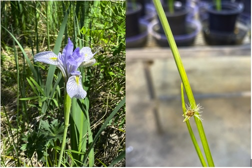
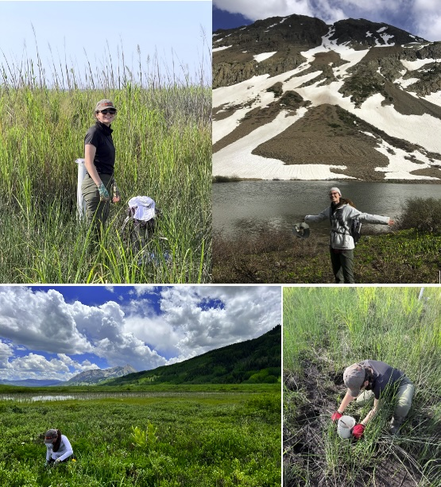
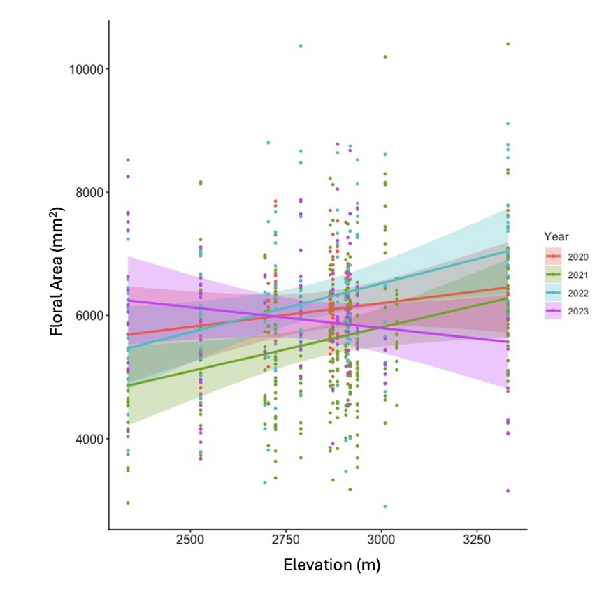
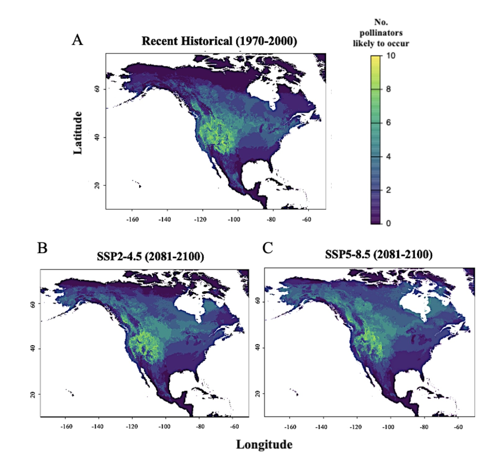
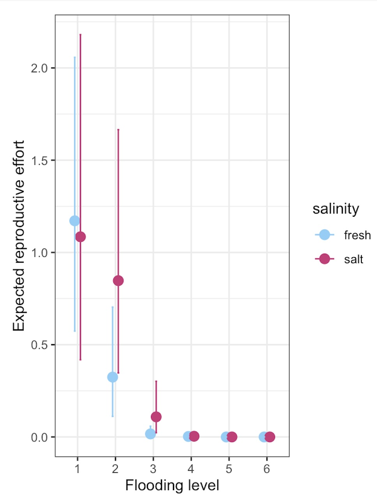
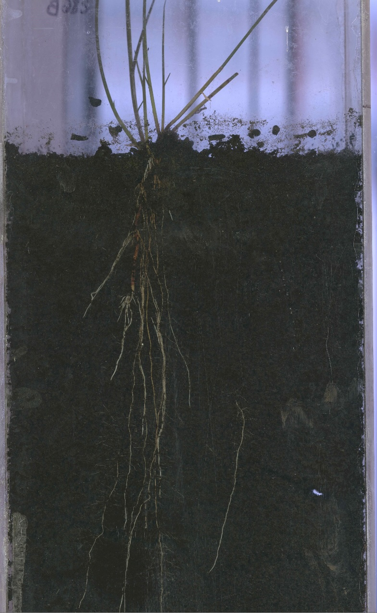

Samantha Day Briggs

Welcome to my website!
I am an evolutionary ecologist interested in how environmental change influences patterns of plant reproduction. I combine field and greenhouse experiments, resurrection ecology, and ecological modeling to understand how plant populations vary across environmental gradients (spatial scales), how their traits have changed through time, and the ecological consequences of those changes. I have used the Rocky Mountain iris, Iris missouriensis and the Southeast native coastal marsh sedge Schoenoplectus americanus to uncover evolutionary and plastic reponses to environmental drivers, but also have experience working with Boechera stricta and Chamaecrista fasciculata.
I am currently a Postdoctoral Researcher in the Odum School of Ecology at the University of Georgia, working with [Megan Vahsen]. I completed my Ph.D. in Genetics at the University of Georgia in 2025 with [Jill Anderson].
Research

Floral trait variation across environmental gradients
I am interested in how floral trait expression in charismatic flowers such as Iris missouriensis varies across elevational gradients and how abiotic and biotic drivers interact to influence floral trait expression and evolution.

Spatiotemporal shifts in plant-pollinator communities
Ranges of plants and their pollinators are shifting independently. I model the ranges of co-occurring species such as Iris missouriensis and its current community of pollinators to evaluate the vulnerability of generalist species to spatial mismatches with obligate mutualists.

Resurrection ecology of a coastal sedge
Using seeds revived from dated marsh sediments, I investigate how investment in sexual reproduction in Schoenoplectus americanus changes in response to environmental conditions and how plasticity in those responses has evolved over time.

Roots, Rhizomes, and marsh resilience
Many plant species, including Schoenoplectus americanus and Iris missouriensis, are also able to reproduce clonally through rhizomes. In systems such as coastal marshes, rhizome production play a significant role in ecosystem processes. I am developing work that links AI-enabled root phenotyping with marsh elevation modeling to predict how belowground plant traits influence coastal wetland persistence under sea-level rise.

Publications
Peer-reviewed publications
- Day Briggs, S. and Anderson, J.T. “Spatial mismatches of plant-pollinator interactions under future climate conditions.” Journal of Biogeography, 2026; 53(4): e70204. https://doi.org/10.1111/jbi.70204
- Day Briggs, S. and Anderson, J.T. “The effect of global change on the expression and evolution of floral traits.” Annals of Botany, 2025; mcae057. https://doi.org/10.1093/aob/mcae057
- Hamann, E., Denney, D.A., Day, S., Lombardi, E., Jameel, M.I., MacTavish, R., and Anderson, J.T. “Plant eco-evolutionary responses to climate change: Emerging directions.” Plant Science, 2020; 110737. https://doi.org/10.1016/j.plantsci.2020.110737
Manuscripts in review
- Vahsen, M.L., Ashander, J., Day Briggs, S., Blum, M., Megonigal, J.P., and McLachlan, J.S. “Plastic and evolutionary responses of plants to sea level rise alter marsh ecosystem processes: Lessons from an eco-evolutionary model.” In review, Proceedings of the Royal Society B.
Preprints and in prep
* indicates undergraduate mentee
- Day Briggs, S., Howard, M.C.*, and Anderson, J.T. “Pollinator preference for large flowers contrasts with clinal variation in flower size.” bioRxiv.
- Day Briggs, S., Blum, M., and Vahsen, M.L. “Evolutionary shifts in reproductive allocation in a coastal sedge.” Draft manuscript in review with co-authors.
Teaching & Mentoring
- Instructor of Record, Introductory Biology Laboratory, University of Georgia
- Teaching Assistant, Evolution (discussion sections) and Biology (lecture), University of Georgia
- Writing Instructor, Evolutionary Biology Laboratory
- Writing Instructor, undergraduate research courses; developed writing retreats and resources for 75 student researchers
- Future Faculty Fellow, University of Georgia (2023 cohort)
- Research mentor to over 20 undergraduate researchers in the lab, field, and greenhouse
CV
Download my full CV here (PDF).